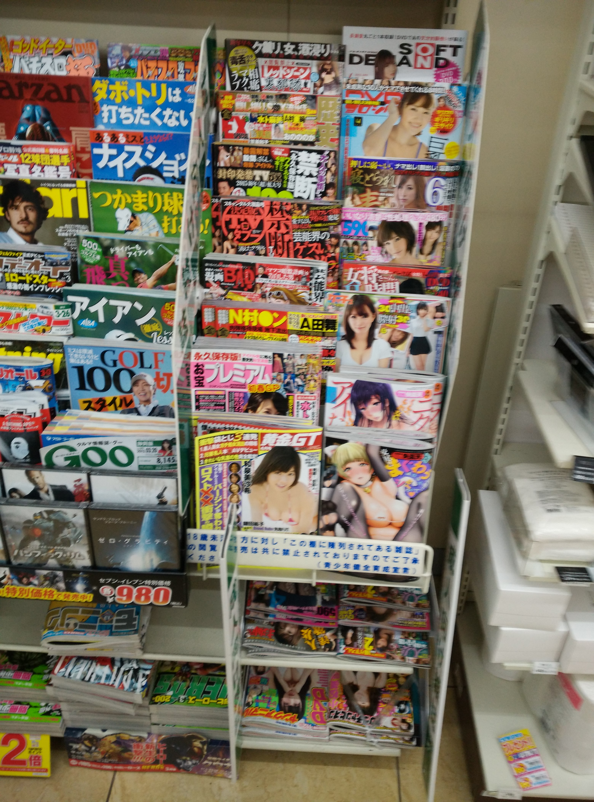

已经好久没记日记了，其实从好久之前就已经不常写了。
有时候晚上直接睡觉了就忘了，有时候懒得写了，又有时候在外面没电脑写不了第二天又不想补。总之，总是有各种各样的借口。所以我为什么要写博客呢，为什么要写日记呢，即然这样，那干脆就直接别写了。断断续续，不如不续。
以后就想到些啥单独发些啥，日记什么的对我而言还是免了吧。
已经好久没记日记了，其实从好久之前就已经不常写了。
有时候晚上直接睡觉了就忘了，有时候懒得写了，又有时候在外面没电脑写不了第二天又不想补。总之，总是有各种各样的借口。所以我为什么要写博客呢，为什么要写日记呢，即然这样，那干脆就直接别写了。断断续续，不如不续。
以后就想到些啥单独发些啥，日记什么的对我而言还是免了吧。
我想在此总结一下我的背单词方法，感觉效果非常不错。
以GRE单词为例
我比较推荐扇贝，因为它只会问你记住了或者没有记住，而不会给你四个选项让你选。我曾经使用过一些四选一的背单词软件，结果就是选都能选，但遮住选项大部分时候就不认识这个单词了，而扇贝不会出现这个问题，所以感觉非常棒。
第一遍背单词求快，用尽量短的时间把GRE单词过一遍，比如我就是用的700单词200新词模式，背完3000个单词大概需要20天左右，如果觉得太慢，我觉得可以结合单词书同时背。亲测还是有效的。
当已经背过一遍了以后，就可以开始用书背了，这时候有一些单词其实已经有点忘了，所以快速地过一遍单词书，把记不起来的用记号标出来，然后再巩固。每天5-10个list感觉比较合理。
第三遍就可以看例句了，扫一遍例句，差不懂就算是背完了GRE单词了吧。
当然背单词不能松懈，就算背完了，如果不常回顾的话也会忘的，所以还是要多加复习。
经历了一个戏剧性的周末，从昨天开始调整好心态，重新出发。
本来是不想写这种东西的，只想一个人静静地开始新的旅程，但是到后来，还是忍不住想写点什么，既是对过去的总结，也是对未来生活的希冀。
每每别人问我，为什么会分手，我大概自己也只会半信半疑地说一句”三观不合”。
真的是这样吗，恐怕是的吧，我连究竟是不是三观不合都不敢肯定，那一定是天底下最大的不合。
本来以为什么都是可以适应的，本来以为什么都是可以商量的，本来以为什么坎都是可以越过去的，本来以为什么矛盾都是可以调和的，可是万万没想到，现实竟是如此残酷，不能适应的依旧不能适应，越不过去的依旧越不过去，到头来换来的只是自欺欺人和不断地麻痹自己而已，骗自己说慢慢适应就好，骗自己说有事商量商量，骗自己说有什么不对的都可以改。
三观不合，说不定就是这世上最大的悲哀。也许这两年半，真的就是一个奇迹，创造这个奇迹的人，或许现在该歇歇了。
说实话，这两年半，真的走的很累，很累，总是要不断地适应，不断地改变自己，以求与对方有更多的交集，能更好地交往，或许在大一下那次就分了的话，说不定对我，对你都是更好的结果吧，虽然这样说看起来很残忍，但或许这是这两天以来，我一直不愿意承认，却在我心中越来越确信的事实吧。现实有时候就是这么残酷。
难道能说不爱吗，这是绝对不可能的，不然也不会坚持这么久，坚持到让我现在想起来都感觉非常诧异的地步，亦或者是恋爱时期的荷尔蒙发作？
本来是真的想走一辈子的，但这样了，也就这样吧，的确不合适，我承认，什么爱情能冲破一切阻碍，都是电视剧拍拍的，就像什么心情不好就要喝酒抽烟，开车就要抽烟，都是电视剧深深地毒害啊。
只能在最后说一句，祝你幸福。
就像前面说的，我想了很多，很多，想了整整两天，想通了很多事情。
过去了就要放下，人要朝前看，可能有人会说我冷血吧，不过我就是这样的人啊，拿得起，放得下，其实也没有什么大不了的，不过是翻了个跟头罢了，时间会冲淡一切的。
感谢你能来陪我，在这种时候，陪我喝酒，陪我聊天。
就像我说的，在高二的时候我喜欢你，但那时候你在学校里朋友太多，你对我的好，我不知道只是给我的，还是你对所有人都是这样，所以这件事就在心底深深地埋藏了起来，现在想起来还真是可笑，笑我当初的傻。
可是事情就是这样，似乎我现在也挺傻的，所以才会有这个机会，让我把深藏在心底的东西给挖出来。
我在其他事情上可能很果断，可是在爱情上，不知为什么，我就是这么优柔寡断，无论什么时候。或许我的情商的确低吧，就在刚才翻以前的人人的时候，我曾经吐槽过，说徐毅觉得我的情商好低，那时的我还不服气，不过现在看来，好像就是这么回事啊，情商的确是硬伤。
“你那时候要是表白了，就在一起了啊”你这么说着，也许这就是世界线的收束吧，这么中二的设定现在想起来甚至开始相信它的真实性了，无论中途如何的发展，最后都会收束到命运石之门的世界线吧，都是命运石之门的抉择啊
“随性点好”，”是啊，随性点好”，大家都是随性的人，或许真的就是合适了就在一起，不合适就分手，这样的设定才符合我的性格吧，迁就来迁就去的，或许真的不适合我这样的人。
“如果这次再不抓住，我怕我会后悔一辈子”，说真的，如果不说这些话，我真的怕这辈子会一直后悔下去，直到被憋成内伤。已经错过一次，我真的不希望再错过第二次，不然恐怕真的会后悔一辈子吧。
我不知道我今天写下的这些到底会造成什么影响，不过这都是我内心的真实想法，我只是想完完整整地把它们写下来，仅此而已。
祝我幸福，也祝所有看了这篇东西的人都能幸福。
大概就是这样吧。
2点的飞机从杭州飞静冈，结果因为航空管制延迟到2点40，还是有点小不爽的。到的时候已经是晚上了，直接入住了宾馆，环境感觉非常不错，附图两张，第一张是飞机上拍的，飞机刚好夹在两层云中间，第二张你们懂得……
不知道图片为什么放不上去……我再研究一下……

早晨6:40叫早，8:00出发，前往伊豆，先去了净莲瀑布，然后是七潼瀑布，都是一些日本人在游玩，很少看到中国旅游团……
好的是伊豆的早樱已经开了，非常漂亮，然后下午去往东京，参观了东京都厅，俯瞰了大半个东京
3月2号晚上逛了东京，给某星买了羞羞的小本子。3月3号早上去了秋叶原，但是去的有点早，漫画店还没开门。
然后去了浅草寺，直接求了一只上上签，我简直佩服我自己，然后参观了皇居外苑，最后去了银座，买了好多东西啊~
晚上来到箱根，泡了温泉，现在外面在下大雪，明天应该能看到漂亮的雪景
4号早上出发前往富士山，因为大雪所以封山，所以在富士资料馆逛了一圈。想起了富士山下这首歌
然后下午去了平和公园，晚上在滨松吃了螃蟹餐，很轻松的一天，明天又要买买买了
在京都参观了一个忘了名字的寺庙，据说是什么一休哥balabala……然后在大阪参观了大阪城公园，这是丰成秀吉在战国时期建造的城池，后来在德川时期扩建过
最后来到心斋桥买买买！三个手办500多感觉还挺便宜的……明天就回来啦！